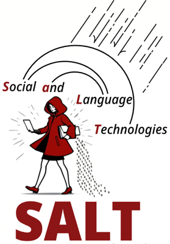

Preprint
About
Hello! I'm Xinrui Shi, a senior undergraduate student majoring in Software Engineering at
Shanghai Jiao Tong University . I'm currently a research intern at
SALT Lab 
At SJTU, I have worked with Prof. Yulun Zhang on multimodal reasoning, Prof. Yong-Lu Li at RHOS Lab on human-agent collaboration for 4D reconstruction, and Prof. Mingkai Dong at IPADS on efficient mobile LLM inference.
I’m always happy to discuss research and potential collaborations. Feel free to get in touch!
Research Interests
My research goal is to build capable and trustworthy AI systems that can operate autonomously in complex real-world environments. In particular, I'm interested in agents and AI safety, especially how interaction shapes agent behavior over time. My broader interests also include multimodal reasoning and machine learning systems.
Publications
* Equal contribution
NeurIPS
DRScaffold: Boosting Dense-Scene Reasoning in Lightweight Vision Language Models
NeurIPS 2026, Dec 2026
ECCV
OSDI
Background
Education

Shanghai Jiao Tong University
B.S. in Software Engineering, School of Computer Science
GPA: 4.13/4.3, Rank: 1/97
Sep 2023 – Jun 2027(expected)
Stanford University
Undergraduate Visiting Research Intern
Advisor: Prof. Diyi Yang
Jun 2026 – Aug 2026
Honors
National Scholarship
Top 0.4% Nationwide
2024, 2025, 2026
Shanghai Jiao Tong University Undergraduate Category A Scholarship
Top 1% in SJTU
2024, 2026
CCF Elite Collegiate Award
1 of 101 Nationwide
2026